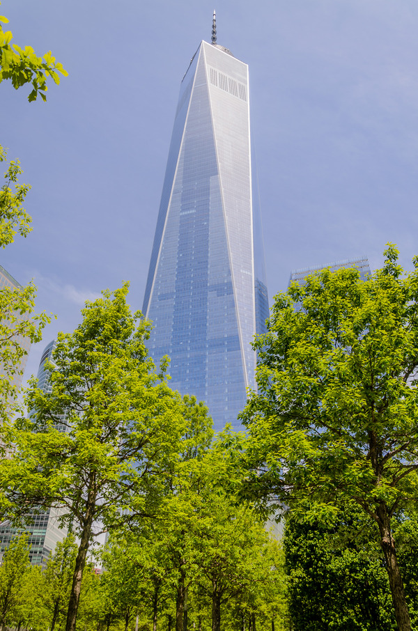
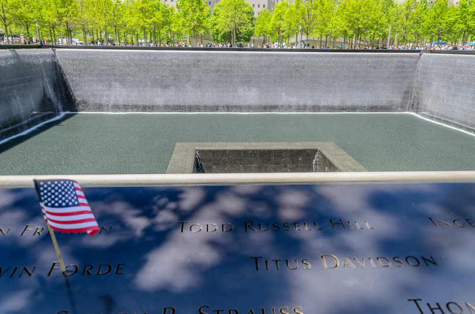
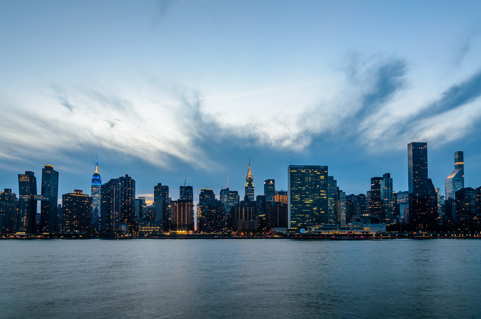
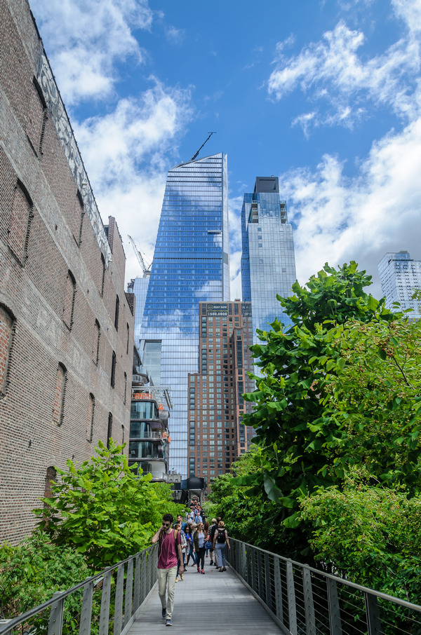
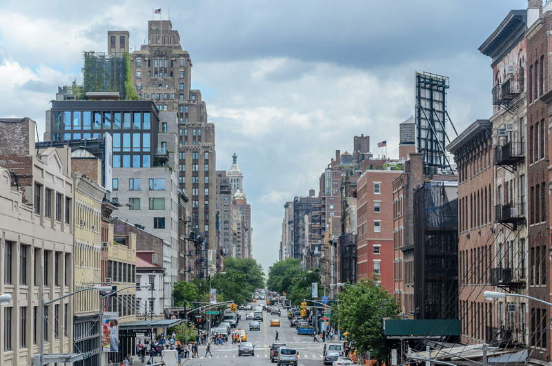
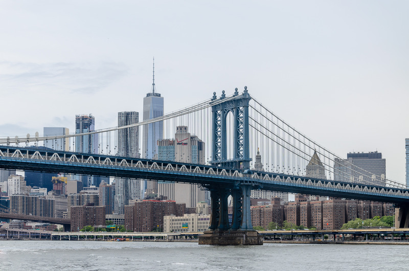
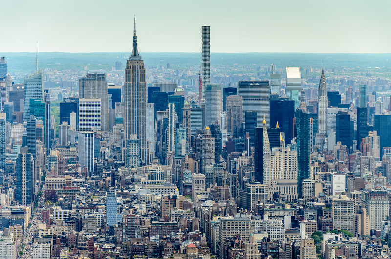

Je to už bezmála jedenáct let, co jsem naposledy psala do rubriky " Za velkou louží". Jedenáct let od mé první návštěvy džungle New Yorku. Před čtyřmi lety jsem se do města, které mě tenkrát na první pohled vůbec neokouzlilo, vrátila. A tentokrát ve mně zanechalo mnohem lepší dojem než napoprvé. V následujících článcích vám chci vyprávět o tom nejlepším, co jsme za velkou louží viděli a zažili. Asi to není náhoda, že se ke vzpomínkám na naši poslední velkou cestu vracím právě teď, kdy sedíme doma a čekáme, až se kolem nás všechno špatný konečně přežene a my zase začneme normálně žít a cestování přestane být radovánkou z říše snů…
Stejně jako v případě naší cesty po Katalánsku mi i tady přišlo lepší psát příspěvky spíš tematicky, než chronologicky. Pokud budete v článcích hledat inspiraci pro svou vlastní cestu po východě USA (třeba, jednou), určitě to bude i mnohem praktičtější.
O New Yorku se právem říká, že je nejhezčí z výšky a z dálky, protože zblízka je špinavej a smrdí :-D Nedá se to vztáhnout úplně na všechny městské části, ale obecně to tak prostě je, a proto bych vás na úvod chtěla provést po těch místech, odkud nám New York přišel hezký (a odkud si můžete pořídit super panoramatické fotky).
Hned první den po našem příletu nás brácha s Jennifer vzali na jednu z nejpůsobivějších vyhlídek - One World Trade Center. Tenkrát v roce 2010 tu bylo skutečně jen “ground zero” - nestačila jsem se divit, jak se během těch pár let místo, kde dříve stála Dvojčata, proměnilo. Mrakodrap One World Trade Center, známý také jako Freedom Tower, je dnes čtvrtou nejvyšší budovou světa a byl otevřen veřejnosti v roce 2014. Už cesta nahoru na vyhlídku je ohromným zážitkem - na stěnu výtahu se promítá animace, zachycující proces stavby budovy. Výtah vás vyplivne v zatemnělém sále, kde vám nejprve promítnou krátké video o New Yorku a pak vyjede nahoru opona a odkryje vám výhled na panorama města. Je to sice strašně americké, ale zároveň fakt úchvatné. My měli navíc štěstí na mimořádně hezký slunečný den, takže to skutečně stálo zato. Zajímavostí je, že mrakodrap disponuje mimořádnými bezpečnostními opatřeními před teroristickými útoky a budova by měla být dokonce odolná proti nárazu letadel :-O.

Po návštěvě Freedom Tower nelze jinak než zavítat také k památníku The National September 11 Memorial, který tvoří dva obrovské bazény, nacházející se na půdorysech zřícených Dvojčat. Po obvodu bazénů jsou vyryta jména obětí teroristických útoků. Atmosféra toho místa je nepopsatelná. Nedaleko bazénů najdete také tzv. Survival Tree - během odklízení trosek jej dělníci našli, stále ještě zakořeněný v půdě. Strom se po ošetření jako zázrakem probudil k životu a jeho větve se na jaře zazelenaly novým listím a květy. Stojí zde jako symbol těch, co přežili apokalypsu 11. září…

Dalším místem, které nám brácha doporučil pro pořízení krásných záběrů Manhattanu, byl Long Island. Tato průmyslová čtvrť v Queensu nepatří právě k turisty nejhojněji navštěvovaným částem New Yorku a vlastně tady toho ani není moc k vidění. O to lépe ovšem pro nás! Rozhodli jsme se vyrazit sem navečer a vyfotit si panorama postupně se rozsvěcejícího města při západu slunce. A byl to každopádně super tip! Promenáda posetá lavičkami má klidnou a romantickou atmosféru a rozhodně tu nehrozí boxovaná s davy dalších turistů.

Pro ty, kteří chtějí New York poznávat zase z trochu jiné perspektivy, je skvělou variantou procházka po High Line, relativně nové místní atrakci. High Line je 2,33 kilometrů dlouhý visutý park na bývalém kolejišti. Jedná se o původní kolejiště z roku 1934, po němž se dopravovaly různé produkty mezi zdejšími továrnami. Po jeho uzavření vznikly nápady na přebudování kolejiště na městský park. Dnes představuje High Line skvělou odpočinkovou zónu (byť její kouzlo už objevila řada lidí a nemůžete počítat s tím, že si tady budete špacírovat sami), po které je rozeseta řada uměleckých artefaktů či míst k posezení.


Posledním tipem, odkud si můžete New York prohlédnout a spojit to s prima zážitkem, je okružní plavba okolo Manhattanu. My ji měli i s komentářem - angličtinou sice nevládnu tak dobře, abych si ji jaksepatří užila, ale pár zajímavostí, kolem kterých jsme pluli, jsem přece jen zachytila - třeba přístav, kam připlula loď s trosečníky z Titanicu. Krom klasických panoramat s mrakodrapy si během plavby můžete užít i nevšední pohled na newyorské mosty (my jeli okružní plavbu až k Manhattan Bridge) a přiblížíte se i k Soše Svobody :-)

A to by bylo pro začátek asi vše. Musíte omluvit mou paměť - ne vše už se mi po těch letech přesně vybavuje, ale věřím, že pro ty z vás, kteří už mají vší té izolace taky plné zuby, bude tato malá americká série fajn počtením a vzpomínkou na starý dobrý bezrouškový časy. Tak cestování prstem po mapě zdar :-)!
